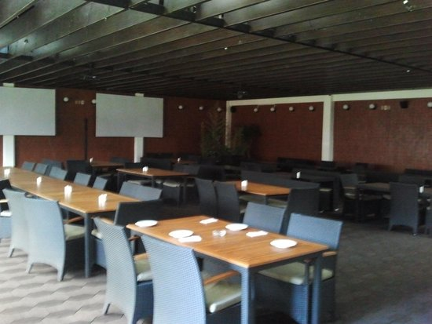
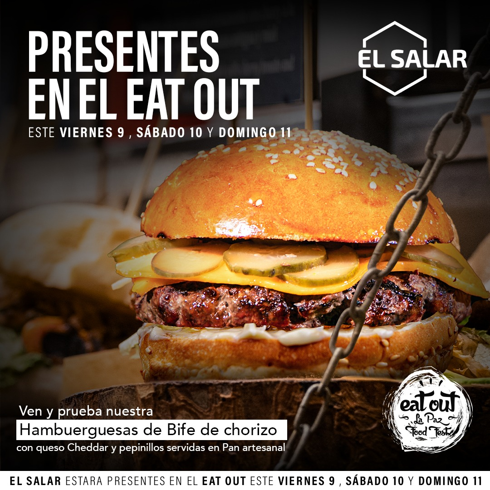
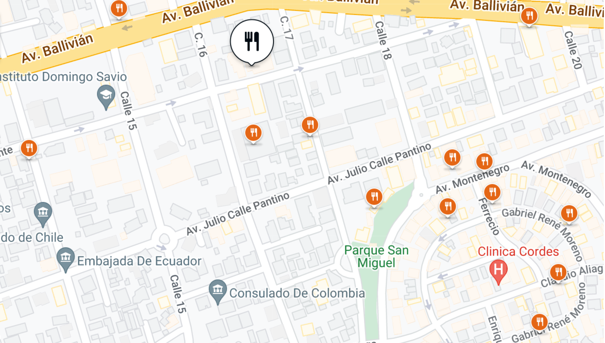

Bienvenidos. Horarios Delivery
De Lunes a Viernes De 12:00 a 21:30
Sábados De 12:00 a 20:40
Domingos De 12:00 a 15:30
MENÚ

Promos & Especiales
Entradas & Piqueos
Sopas & Ensaladas
Pasta & Lasagna
Pizzas
Postres
Bebidas
UBICACION
GALERIA


TESTIMONIOS
"El margarita tiene un ambiente amplio me encanta en la forma en la que te reciben
la atención es muy buena, la comida igual es maravilloso."
"Muy buena la infraestructura y el ambiente pero la comida con poco sabor,
pedi ravioles a la pistachio y estaban con muy poco sabor, parecian un
poco viejos .. mi esposa pidio napolitana y la carne dura."
"El margarita tiene un ambiente amplio me encanta en la forma en la que te reciben
la atención es muy buena, la comida igual es maravilloso"